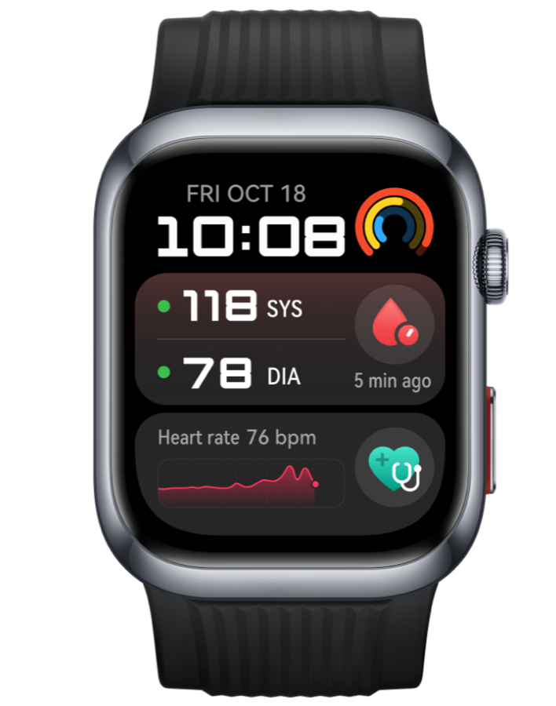

Идея варианта
Варианты А и Б исходят из того, что браслет мы производим сами. Здесь проверяется обратное: взять готовое устройство Huawei и построить программу наблюдения на нём. У Huawei есть ровно то, чего нет у нас, — сертифицированное измерение давления на запястье.
Проверка дала неожиданный результат. Сотрудничество возможно и переговоров стоит, но не в той форме, в которой кажется на первый взгляд: закупочная цена массового браслета Huawei в Казахстане выше нашей планируемой розничной цены, а потребительский интерфейс данных договором запрещает применение в медицинских продуктах.
Зато разбор вскрыл то, что было спрятано в наших же расчётах: основную часть результата даёт не железо, а модуль наблюдения — и он работает с любым источником данных. Отсюда третий сценарий, которого не было в проекте: подключать устройства, которые у пациента уже есть.
Huawei в здоровье — это три разных контура
Ключ ко всей теме. Под одним именем скрываются три несвязанных предложения с разными правилами, разной географией и разным юридическим статусом. В китайских кейсах впечатляет второй контур, а доступен нам в Казахстане — первый, самый ограниченный.
Потребительский
Huawei Health и Health Kit API. Band, Watch GT, Watch D2/D3. Около 170 стран, включая Казахстан. Доступ открыт — но медицинское применение запрещено договором.
Корпоративный 擎云 Qingyun
Коммерческий бренд Huawei для организаций и промышленный SDK. Устройства H9D20 и H3550 с регистрацией медизделия. Только материковый Китай — вне КНР недоступен.
Исследовательский
Платформа Terve Research в Европе и прямые проекты с клиниками — Dubai Health, QCRI в Катаре. Вход только через партнёрство.
Устройства
Что именно можно взять и почём. Технология микроманжеты разобрана в исследовании по давлению — здесь только доступность и цена в Казахстане.

Фото: пресс-материалы Huawei (открытый источник, notebookcheck.net).

Фото: официальный сайт Huawei Казахстан (consumer.huawei.com/kz).
| Устройство | Что даёт | Цена | Статус у нас |
|---|---|---|---|
| Watch D2 | микроманжета в ремешке, АБПМ, ЭКГ; CE MDR + NMPA | 148 700 – 189 890 ₸ | продаётся в РК, но без медицинского статуса |
| Watch D3 | то же тоньше: 11,3 мм, 40 г, режимы до/после нагрузки, ESH-интервалы в алгоритме | €449 / £399,99 | в РК не заявлен |
| Band 10 | массовый браслет: ЧСС, SpO2, сон; наш прямой конкурент по полке | 14 490 – 22 386 ₸ опт от 100 шт — 16 369 ₸ |
продаётся, скидка за объём около 5% |
| Qingyun H9D20 детальный разбор → |
всё нужное: четыре регистрации NMPA, ночное автоизмерение каждые 30 мин, кастомизация под наш бренд | цена по запросу | только Китай |
🔴 Ключевой факт: на казахстанской странице Huawei сам пишет, что функция «Показатели здоровья» не предназначена для использования в медицинских целях и не должна быть основой для диагностики или лечения. Европейский CE MDR и китайский NMPA на Казахстан не переносятся — это ровно тот же разрыв, который мы нашли у Hilo в США.
Доступ к данным
Наша техспецификация требует от завода RR-интервалы, статус ношения и работу без чужого облака. Проверяем, что из этого даёт Huawei. Ответ: всё — но через тот интерфейс, который нам недоступен.
| Что нужно нам | Health Kit потребительский | Health Industry SDK корпоративный |
|---|---|---|
| ЧСС, шаги, SpO2, сон, стресс | есть | есть |
| RR-интервалы (RRI) | нет | есть |
| Вариабельность ритма (HRV) | нет | есть |
| Артериальное давление + отчёт АБПМ | нет | есть |
| Статус ношения (наш DB-403) | нет | есть |
| Апноэ сна, аритмия по пульсовой волне | нет | есть |
| Падение и SOS | нет | есть |
| География | включая РК | только КНР |
Следствие: вариант В на потребительском интерфейсе несёт не только тот же регуляторный риск, что вариант Б, но ещё и договорный — с отключением доступа. Это делает его юридически слабее варианта Б, а не сильнее.
Порог входа в корпоративную программу тоже назван: юрлицо старше года и оплаченный капитал не менее 500 000 юаней для базового доступа (около 32 млн ₸, оценка) либо 5 млн юаней для расширенного — а давление и ЭКГ лежат именно там. В анкете отдельно спрашивают, связано ли применение с медициной.
🔴 И главное ограничение, которое документация Huawei формулирует прямо: «Health Service Kit поддерживает страны и регионы только в пределах территории Китая» — за исключением Гонконга, Макао и Тайваня. Зарубежным разработчикам остаётся облачный REST-интерфейс с более узким набором данных: без статуса ношения, RR-интервалов и подписки на события в реальном времени. Подробности — в разборе H9D20.
Экономика: три сценария
Горизонт 24 месяца, допущения те же, что в вариантах А и Б: подписка 690 ₸/мес, внутренняя цена модуля 500 ₸/пациент/мес, комиссия Kaspi 13%, операционные расходы 1,5 млн ₸/мес.
В-1. BYOD — подключаем устройства, которые у пациента уже есть
| Подключено пациентов | Подписки | Модуль наблюдения | Результат 24 мес |
|---|---|---|---|
| 2 000 | 7,7 млн ₸ | 12,9 млн ₸ | −13,9 млн ₸ |
| 5 000 | 19,1 млн ₸ | 32,4 млн ₸ | +17,0 млн ₸ |
| 10 000 | 38,3 млн ₸ | 64,8 млн ₸ | +68,5 млн ₸ |
В-2. Дистрибуция Huawei Band 10
| Закупочная цена | Вложения | Маржа B2B | Маржа B2C | Итог 24 мес |
|---|---|---|---|---|
| 15 000 ₸ (оценка опта) | 150,0 млн ₸ | 19,2 млн | 4,3 млн | +65,3 млн ₸ |
| 16 369 ₸ (публичный опт) | 163,7 млн ₸ | 9,7 млн | 0,2 млн | +51,6 млн ₸ |
Четыре причины не брать В-2. Первая: вложения в партию вчетверо выше — 150–164 млн ₸ против 40 млн. Вторая: розница не работает вообще — при публичном опте маржа с 3 000 устройств составляет 0,2 млн ₸, мы становимся дилером, а не производителем. Третья: цена для поликлиники растёт в 2,6 раза, а объём в расчёте оставлен прежним — это второе непроверенное допущение и главная слабость сценария. Четвёртая: теряется рекламное утверждение, на котором построена вся розничная стратегия, — «медицинское изделие дешевле обычного фитнес-браслета». Мы начинаем продавать сам фитнес-браслет по его же цене.
В-3. Watch D2/D3 для гипертоников — нишевая программа
| Устройств | Вложения | Маржа и подписки за 24 мес |
|---|---|---|
| 300 | 45,0 млн ₸ | 9,8 млн ₸ |
| 500 | 75,0 млн ₸ | 16,3 млн ₸ |
| 1 000 | 150,0 млн ₸ | 32,7 млн ₸ |
Сравнение трёх стратегий
Одна таблица, по которой принимается решение.
| А. Медизделие с РУ | Б. Без регистрации | В-1. BYOD | В-2. Дистрибуция Huawei | |
|---|---|---|---|---|
| Вложения | 58 млн ₸ | 43 млн ₸ | 3 млн ₸ | 150–164 млн ₸ |
| Старт продаж | мес 16 | мес 6 | мес 4 | мес 4 |
| Результат 24 мес | +20,0 млн ₸ | +76,2 млн ₸ | +68,5 млн ₸ | +51,6…65,3 млн ₸ |
| Цена устройства пациенту | 14 990 ₸ | 14 990 ₸ | 0 ₸ (своё) | 18 900 ₸ |
| Зачёт наблюдения по ДСМ-39 | есть | нет | нет | нет |
| Контроль над железом | полный | полный | нет | нет |
| Договорный риск | нет | нет | запрет Health Kit | запрет Health Kit |
Как Huawei работает с чужими медицинскими проектами
Доказательство, что дверь существует. Ни один из кейсов не является продажей устройств — все построены как партнёрство.
Китай — зрелая модель, которую мы и хотим повторить. Народная больница Вэньчжоу открыла центр послебольничного управления в сентябре 2023: сеть охватила 47 отделений двух корпусов, обслужено 30 тысяч пациентов, повторная явка 89,99%, удовлетворённость выше 98%. Данные идут с носимого устройства через стандартный интерфейс приложения Huawei Health, с авторизацией пациента, на панель врача. В Народной больнице провинции Цзянсу и больнице Фукан в Тибете то же решение дало снижение нагрузки медсестёр по измерениям на 60% и сокращение времени реакции с 15 минут до 3.
Масштаб направления по данным самой Huawei: более 100 тысяч корпоративных клиентов, 200 с лишним партнёров; в здравоохранении — сотрудничество со 150+ исследовательскими организациями, 50+ больниц, 600+ общественных центров здоровья. Модель называется «платформа плюс экосистема»: Huawei даёт устройство и открытые данные, партнёр пишет алгоритмы и приложение под конкретную нозологию. Это ровно та роль, на которую претендует Damumed.
Вне Китая. 31 августа 2026 на конгрессе ESC в Мюнхене запущена Terve Research — европейская платформа исследований на носимых Huawei: финансируется Huawei, управляется независимо компанией Thryve. Dubai Health в мае 2025 провела совместное исследование функций здоровья Watch 5. Катарский QCRI ещё в 2021 году построил платформу SIHA для управления хроническими заболеваниями на данных Huawei — ближайший к нам по смыслу прецедент. Представитель Huawei прямо говорит, что для развёртывания функций уровня глюкозы и сердечно-сосудистого мониторинга компания намерена «сотрудничать с локальными медицинскими учреждениями и интегрировать технологии локально».
Что мы можем предложить и что просить
Переговоры имеют смысл, только если у нас есть что дать. У нас есть.
| Что даём мы | Что просим |
|---|---|
| Канал в первичное звено, которого у Huawei в РК нет: МИС, установленная в поликлиниках страны | Доступ к промышленному SDK, а не к потребительскому Health Kit — снимает и технический дефицит, и договорный запрет. Возможен ли он вне КНР — главный вопрос всего варианта |
| Клиническую когорту: 1,78 млн человек с гипертонией на диспансерном учёте — группа, ради которой создавалась линейка Watch D | Размещение данных в Казахстане или локально на устройстве. Без этого разговор бессмыслен по нашей же регуляторике — тот же первый вопрос, что мы задали Hilo |
| Локальную валидацию — по образцу Dubai Health и QCRI | Регистрационный статус: планирует ли Huawei регистрировать Watch D2/D3 в РК и кто будет держателем удостоверения |
| Готовую панель врача и интеграцию с медкартой — в Китае эту часть Huawei отдаёт партнёрам | Устройства на пилот — по образцу закрытых исследований Terve Research |
| Витрину для региона: первый в Центральной Азии проект «носимое + МИС + врач» на рынке, где у Huawei подписан меморандум с Минздравом | Цену для программы. Публичный опт со скидкой 5% предложением не является. Отдельно — кастомизация под Damumed, которую Huawei официально предлагает корпоративным клиентам |
Риски
Семь пунктов, из которых три критические.
🔴 Договорный запрет медприменения в Health Kit. Пока не получен доступ к промышленному SDK, любой поликлиничный контур на устройствах Huawei стоит на нарушении условий поставщика.
🔴 Облако. Данные считаются и хранятся у производителя — точно та же проблема, что с Hilo, и тот же конфликт с требованием хранения на территории РК.
🔴 Qingyun вне Китая не продаётся. Всё, что делает эту тему интересной — промышленный SDK, медицинские регистрации, кастомизация, кейсы больниц, — привязано к линейке, которая за пределы КНР не выведена. Данных о планах вывода нет.
Потеря контроля над продуктом. Дорожную карту, цены, сроки поставок и решение о регистрации принимает Huawei. Мы теряем ровно то, ради чего затевали собственное производство: возможность требовать вибронапоминание, подтверждение приёма лекарств касанием и статус ношения — наше продуктовое ядро.
Асимметрия переговоров — Huawei присутствует в 170 странах; то же наблюдение мы зафиксировали по Hilo с их 119 млн долларов. Геополитический фон — привязка медицинской программы к одному вендору из чувствительной отрасли стоит назвать вслух перед Минздравом, а не после. Каннибализация — если поликлиники привыкнут к Huawei, выводить потом свой браслет за 6 900 ₸ будет сложнее: сравнивать станут не с тонометром, а с Watch D3.
Рекомендация
Вариант В — не третья альтернатива, а дополнительный слой. Брать из него надо две вещи из трёх.
| Сценарий | Решение | Почему |
|---|---|---|
| В-1. BYOD | делать — при любом варианте, А или Б | стоит 3 млн ₸, добавляет канал, ничему не мешает; при 10 тыс подключённых даёт +68,5 млн ₸ и снимает главное возражение поликлиники: не нужно ничего закупать, чтобы начать |
| В-2. Дистрибуция Band 10 | не брать | вложения вчетверо выше, розничной маржи нет, цена поликлинике растёт в 2,6 раза, рекламный аргумент теряется |
| В-3. Watch D2/D3 нишей | держать в поле зрения | единственный законный способ дать цифру давления; адресаты — платные пациенты и корпоративные программы, не массовая поликлиника |
| Запрос в Huawei | отправить | стоит ноль, дверь открыта, прецеденты есть; идти в Huawei Technologies Kazakhstan со ссылкой на меморандум с МЗ 2019 года |
Чего делать не нужно: отказываться от собственного браслета в пользу Huawei; обещать поликлиникам работу на устройствах Huawei до ответа о промышленном SDK и размещении данных; ссылаться на медицинские сертификаты Huawei в материалах для Казахстана — здесь они не действуют, и Huawei сам это пишет.
2. Ручная проверка государственного реестра ndda.kz на наличие удостоверения у Huawei — поручить юристу вместе с вопросом о держателе нашего РУ.
3. Внести BYOD в дорожную карту приложения Damumed как отдельный источник данных — независимо от выбора между А и Б.
Файлы варианта
Документы этого варианта. Материалы вариантов А и Б — на странице с регистрацией и странице без регистрации.